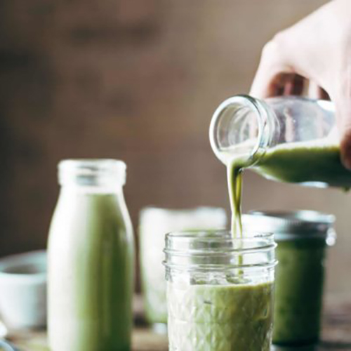

Iced Matcha Green Tea Latte
Iced Matcha Green Tea Latte featuring almond milk, matcha powder,
and honey or agave. Totally vegan 3-ingredient perfection!

INGREDIENTS
- 1 teaspoon matcha green tea powder
- 1 cup Almond Breeze Almondmilk Unsweetened Vanilla
- 1-2 teaspoons agave or honey (more to taste)
INSTRUCTIONS
- In a glass jar, mix the matcha green tea powder with a little
bit of water - just enough to form a paste. Stir it up until there are no clumps.
- Add the milk and agave. Cover with a tight-fitting lid and shake
vigorously until incorporated. Let sit for a minute so any remaining
clumps settle to the bottom. Carefully pour into a glass with ice and enjoy!
NUTRITION FACTS
Serves 1
Calories Per Serving: 201 |
| Total Fat 6.9g |
9% |
Cholesterol 25mg |
8% |
| Sodium 186.3mg |
8% |
Sugars 4.7g |
0% |
| Protein 5.6g |
11%% |
Vitamin A 113.2µg |
13% |
| Vitamin C 1.2mg |
1% |
Iron 0.9mg |
5% |
| Potassium 175.8mg |
4% |
Phosphorus 26.3mg |
2% |